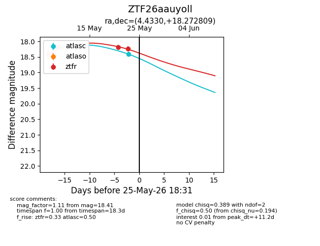
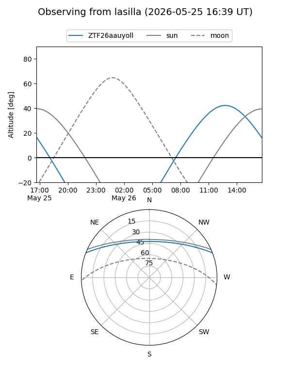
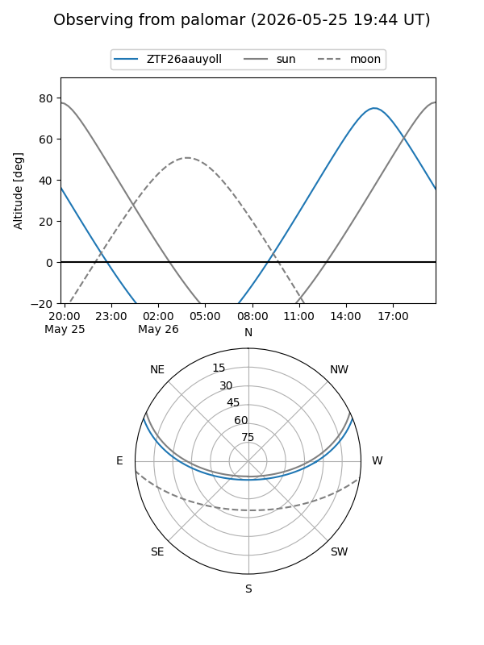
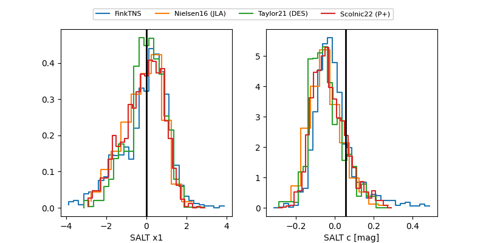

ZTF26aauyoll
Target ZTF26aauyoll at 2026-05-25 18:33
Aliases and brokers:
lsst-FINK: link
lsst-Lasair: link
lsst-ALeRCE: link
ztf-FINK: link
ztf-Lasair: link
ztf-ALeRCE: link
alt names
ZTF26aauyoll (ztf,fink_ztf)
Coordinates:
equatorial (ra, dec) = 4.4330,+18.27281
equatorial (HMS+DMS) = 00:17:43.92,+18:16:22.11
galactic (l, b) = (111.8030,-43.86938)
Flags:
Photometry:
last atlasc=18.41, ztfr=18.23
1 atlasc, 4 ztfr detections
Lightcurve

Visibility


Additional plots
